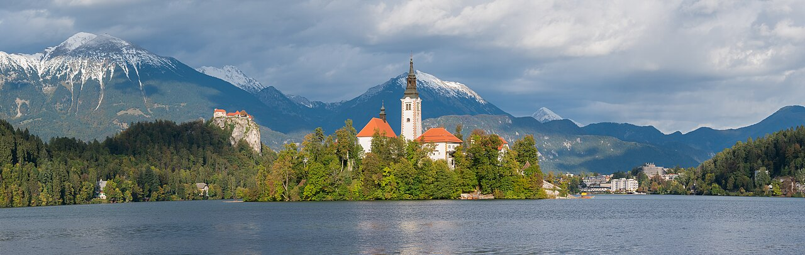

Словения

Словения — компактный альбом: горы, озеро и море укладываются в одну неделю дорог. Блед — открытка, которая работает вживую: остров с церковью посреди озера, лодки гребут к острову, а на колокольне — колокол желаний — по легенде, желание сработает, если позвонить искренне. Замок над озером стоит на скале и смотрит на озеро сверху. Постойнская пещера — пять километров подземной Европы: поезд везёт вас внутрь, как в фильм о подземном городе, а сталактиты растут с такой уверенностью, будто им тут комфортно. Любляна — столица размером с район Москвы: драконий мост, старый город, замок на холме и пекарни, где пахнет потицей — праздничным рулетом с орехами. На море — Пиран в венецианском камне и солеварни Сечовлье, где соль собирают так, как собирали при Венецианской республике. Вина — терan из Карста, красное с привкусом железа, как и положено землям над пещерами. Словения не шумит — и именно поэтому запоминается целиком.
Что знать перед поездкой
- Блед — позвоните в колокол желания
- Постойна — внутри поезд, одевайтесь теплее
- Теран из Карста — красное, к местным колбасам